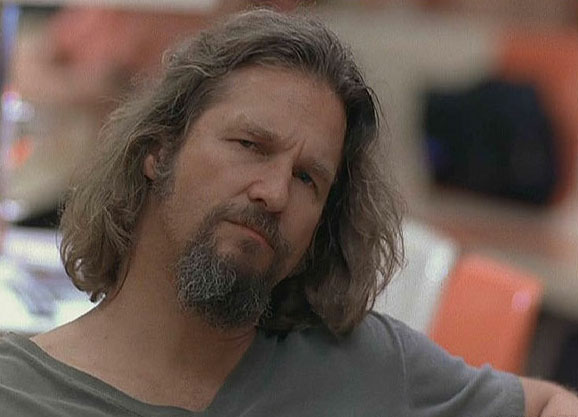
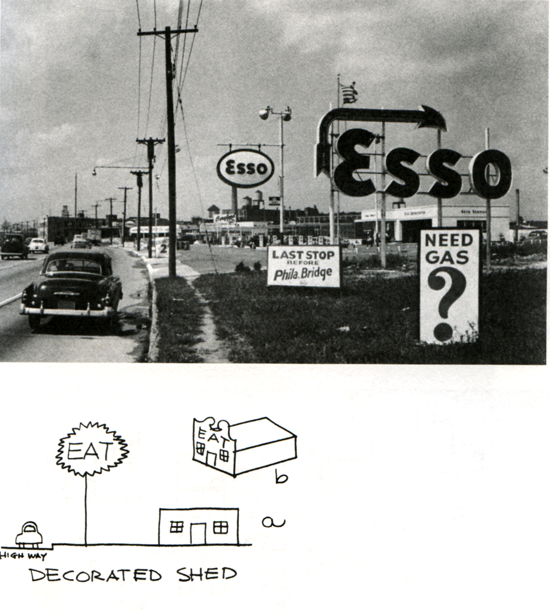

Postmodernism
WTF?
Postmodernism
= Bullshit
I'm guessing most people believe "postmodernism" is a fancy way of saying
"bullshit". And they're mostly right. But I think there's some core amount of
interesting... stuff about it that's worth considering. At a minimum,
you'll sound smarter when you go to museums. And if things get too obnoxious for
you, you can just tune me out and look at some pretty pictures while eating
pizza—that's totally legitimate.
Disclaimers!

These are just, like, my opinions.

There's a lot of postmodernist stuff, but I'm
just gonna focus on the purple things here.
Postmodernism
To talk about Postmodernism, I guess you gotta look at Modernism first. But
that's actually not enough, because Modernism was already kind of a response to
stuff that came before it. So let's wrap all that up into one little box and
call it...
"Pre-modern"
–1915
Representational
"Pre-modern" isn't actually A Thing, it's just convenient for our purposes.
It's stuff like Classical Greek sculpture, or Romanticism in painting, or the
Dutch masters. A lot of the Netherlands, a lot of France, etc. You can say a
lot about pre-modern, but the important thing in this narrative (that I'm making
up) is that it was representational.
Rembrandt
Self-portrait

Rembrandt's self-portraits represented, uh, Rembrandt.
Rembrandt
Self-portrait
I just think this one is funny.
Vermeer
Girl with a Pearl Earring

Just an aside, but I think it's really creepy how close
they got with this movie.
Monet
Water Lilies
Seurat
Un dimanche après-midi à l’Ile de la Grande Jatte

Architecture
Architecture is trickier. A building is always first and foremost a building,
so "representation" is harder to define. I think it's best to look at some
second-order characteristics. And I think it's helpful to consider the
typology of the building. That is, there were historical rules
that were generally followed to make a Church a Church, or a Palace a Palace.
And we can kind of categorize buildings according to how
typological they are.
Wren
St. Paul's Cathedral
English Baroque
For example, St. Paul's Cathedral is super Churchy. It's
not easily mistakable for anything else. It represents a
Church. It takes all these older Church idioms and decorations, and updates them
(for its time) into this really definitive style, called English Baroque.
Wren
St. Paul's Cathedral
English Baroque
Wren
St. Paul's Cathedral
English Baroque
Boullée
Newton's Cenotaph
Architecture parlante

Boullée was super weird and ahead of his time. But you can still think of his
work as representational: Newton's monument was directly informed by Newton's
mathematics.
Reed and Stern
Grand Central Terminal
Beaux-Arts

Reed and Stern
Grand Central Terminal
Beaux-Arts

Reed and Stern
Grand Central Terminal
Beaux-Arts

Modern
1915–1945
Non-representational
Also known as abstract. Basically, modern artists decided they were sick of
always representing stuff literally, and started approaching things, ideas,
forms, even art itself abstractly.
Brancusi
Bird in Space
(Pure) Abstract
So, this is clearly not a bird. Is it the artist's idea of
a bird? Some proto-bird? The flight path of a bird?
Dali
The Persistence of Memory
Surrealism

Picasso
Guernica
Surrealism; Cubism

Picasso
The Old Guitarist

Just an aside: Picasso wasn't exclusively weird stuff.
Duchamp
Fountain
Dadaism (arguably Postmodern)

Dadaism was about nonsense (the name is mostly onomatopoeic) but this piece
in particular was literally just Marcel deciding an old urinal was art, and
signing his name to it. It was the beginning of art only being art with
intent. Super abstract!
Mondrian
Composition C No. III in Red, Yellow and Blue
De Stijl

Dutch as hell.
van Doesburg
Contra-Composition XVI in dissonances
De Stijl
Theo van Doesburg was hugely influenced by Piet Mondrian, and they were
initially friends and peers, but they eventually had a falling-out: Mondrian
couldn't accept diagonals (Neo-Plasticism) and van Doesburg loved 'em
(Elementarism). Literally a friendship ruined by 45°.
Corbusier
Villa Savoye

Early Corbusier is basically seminal modern architecture,
which was about rejecting decoration and classical forms, and building
structurally, or tectonically. Think: lines and surfaces, bare/pure materials.
"Form follows function" as opposed to "Function imposed by form." It's hard to
live in an abstract house, but modern architecture was like modern art in that
they both stripped away ornamentation.
Wright
Fallingwater

The modernist ethos is kind of that people are functional entities that need
things: light, air, space. Buildings are therefore machines for living. Drawing
on the commercial/industrial age, buildings became somehow sleek, machine; a
kind of functional cleanliness that demanded everything be in its right place.
Not only in the building itself: residential, commercial, industrial must all
be separate.
Wright
Guggenheim Museum
Corbusier
Domino House
This is more of a general idea than a specific building. Open interior plan,
external stair, structural support via columns around the perimeter.
Mies
Seagram Building
Mies
Neue Nationale Gallerie
Postmodern
1945–1980?
Exactly when it ended depends on the medium and the artist, but it's over
now.
Lichtenstein
Reflections
Postmodern is actually an umbrella term to cover several distinct movements
that happened at the same time. In painting, postmodernism reintroduces
representation. Sometimes, very direct representation.
Warhol
Campbell's
Campbell's
Letter to Andy Warhol
This is just an aside, but I found it pretty funny. Could
this happen today? I'm pretty sure it would be printed on a lawyer's
letterhead.
Christo + Jeanne-Claude
Surrounded Islands
Land art became kinda popular along with the other
postmodernist stuff. I'm not really sure how postmodernist it is. I guess this
is the part of the presentation I should have worked a bit longer on.
Smithson
Spiral Jetty
Koons
Balloon Dog
Hirst
For The Love Of God

Venturi
The Decorated Shed

Postmodern architecture rejected the
minimalism of modern architecture as totally boring. It's often about an attempt
to conceive a narrative. That is, think of a building not as walls + floors +
roof, but as something else altogether.
Venturi
The Duck

No, really. This stuff is a joke. In the
best way.
Loos
Chicago Tribune Tower competition
This guy Loos entered a competition to design the next skyscraper for the
Chicago Tribune with this building that looked like a column, on the left.
The entry on the right would be the modernist take, by Walter Gropius (Bauhaus
guy).
I.M. Pei
Landau Building
This guy's probably most famous for the entrance pyramid to the Louvre, but
he also did some really depressing buildings on the MIT campus, like this one,
on the left. (It's shaped like a 30-60-90 triangle.) If you're ever in Boston
and having a nice time, check out the Wiesner Building (aka. "the inverted
bathroom") to knock things down a notch.
Gehry
Guggenheim Bilbao
Bonus: postmodernist art in the courtyard! That's a Spider Sculpture by
Louise Bourgeois.
Gehry
Gehry House
Postmodern architecture also reacted negatively toward the idea of modernist
functional separation. Homes distinct from shops—suburbs!—what a
terrible idea!
Rossi
Bonnefanten Museum
Rossi
Alessi Steel Kettle
Postmodernist stuff tends to use super-basic forms, and then do something
funny, like put a little ball on top. Whee!
Rogers + Piano
Pompidou Center

This is postmodern because it's a sort of "decorated shed"—it uses its
mechanical systems as an exterior representation of itself.
Corbusier
Notre Dame du Haut (Ronchamp)
Postmodernism means architecture can be fun again.
Postpostmodernism?